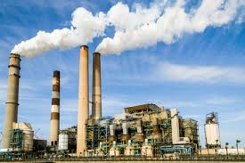

Revolusi Industri 3.0, juga dikenal sebagai Revolusi Digital, dimulai pada akhir abad ke-20, sekitar tahun 1970-an. Periode ini ditandai dengan kemajuan teknologi informasi dan komunikasi, seperti penemuan komputer, internet, dan otomatisasi proses produksi. Teknologi ini memungkinkan efisiensi yang lebih tinggi dalam produksi barang dan jasa, serta mempercepat globalisasi dengan menghubungkan berbagai negara melalui jaringan digital
Revolusi ini membawa perubahan besar dalam cara manusia bekerja dan berkomunikasi. Misalnya, otomatisasi dan robotika mulai menggantikan pekerjaan manual di banyak sektor, sementara internet memungkinkan pertukaran informasi secara instan di seluruh dunia
Faktor-faktor yang memicu lahirnya industri 3.0 adalah:
- Kemajuan Teknologi Informasi dan Komunikasi: Penemuan komputer, microchip, dan perkembangan perangkat lunak memungkinkan pengolahan data yang lebih cepat dan efisien. Hal ini menciptakan dasar bagi otomatisasi dan sistem digital.
- Internet dan Konektivitas Global: Munculnya internet membuka jalan untuk komunikasi instan dan transfer informasi tanpa batas. Dunia menjadi lebih terhubung, yang memicu kolaborasi lintas negara dan transformasi ekonomi global.
- Otomatisasi dan Robotika: Kemampuan untuk mengotomatiskan proses produksi melalui robot dan mesin pintar menggantikan banyak pekerjaan manual, meningkatkan efisiensi dan produktivitas di berbagai sektor.
- Permintaan akan Efisiensi dan Produktivitas: Persaingan global yang semakin ketat menuntut perusahaan untuk terus mencari cara baru agar lebih efisien dan produktif. Teknologi digital menjadi solusi utama.
- Perkembangan Teknologi dan Energi: Energi Transisi menuju sumber energi yang lebih efisien, seperti energi nuklir dan energi terbarukan, juga mendukung perubahan besar dalam industri dan cara kerja.